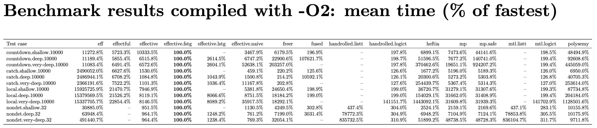
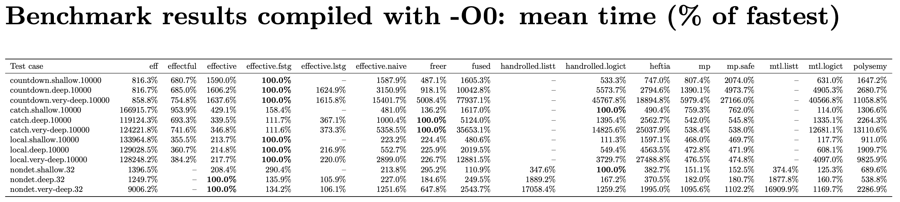

This benchmark suite is for evaluating the runtime performance of the
effective
library. The following Haskell effect libraries are also benchmarked for
comparison: eff, effectful,
freer-simple, fused-effects,
mpeff, heftia, and MTL (with
LogicT or ListT for nondeterminism).
The test cases (in bench/Bench/) are adapted from the
benchmarking suite of heftia-effects
with the following modifications:
The test of coroutine is removed because the bottleneck is in the actual computation rather than the effect framework.
We added a new group of tests called very.deep where
there are 50 reader effects before and after the effect handler being
tested. This group of tests needs a lot of memory to compile so it is
disabled by default in effective-bench.cabal. The library
fused-effects is disabled for very.deep
because it fails in compilation because of running out of simplifier
ticks.
Beside the implementations of effective, we also add
another implementation for hand-rolled monadic code that does not use
the MonadXYZ type-classes. In the benchmark suite of heftia-effects,
the test cases catch and local are not
implemented for libraries that do not support higher-order effects. We
added these tests for all libraries by implementing catch
and local as handlers.
The NOINLINE pragmas in the test cases are removed.
Instead we create two benchmarks with-o0 and
with-o2 for different optimisation levels. Note that we
pass O2 to all packages in cabal.project, so
in the benchmark with-o0, it is the testing programs
receiving O0 but the libraries are still compiled with
O2. This is probably a more realistic scenario than
everything being unoptimised.
We separate the libraries into different compilation units to make sure that each of them receives the same amount of simplifier ticks.
The handlers for state and reader of mp internally
use IORef and unsafePerformIO to store the
state. This technique is applicable to other libraries too, so for a
fair comparison we create a separate test mp.safe where
state is handled in the usual way as state-passing functions.
GHC is pinned to 9.10.1 and all libraries are pinned to specific
versions in effective-bench.cabal for reproducibility. GHC
9.8.4 was also tested. All libraries compile without modification with
9.8.4 but mp and mp.safe crash at runtime,
which should be caused by GHC bugs (since they don’t crash with
9.10.1).
The library freer-simple-1.2.1.2 is slightly patched
to compile with GHC 9.10.1.
freer-simple.cabal is modified to allow the version
of template-haskell that ships with GHC 9.10.1
Line 156 of src/Control/Monad/Freer/Internal.hs is
changed from
instance (MonadBase b m, LastMember m effs) => MonadBase b (Eff effs) whereto
instance (Monad b, MonadBase b m, LastMember m effs) => MonadBase b (Eff effs) whereIt’s not clear to me why GHC 9.10.1 can’t see
MonadBase b m already implies Monad b. The
patched version is shipped in
vendor/freer-simple-1.2.1.2.
In the deep and very deep tests for effective, we use
the handler combinator ++> instead of our usual fusion
combinator |> because effective is designed
to work with effect sets that have no duplicated members, but
the deep and very deep tests of this benchmark introduce duplicates of
reader effects. For a fair comparison, the combinator
++> is added to effective, which
appends effects rather than unions effects when fusing
two handlers.
The shell script runbench.sh runs the benchmarks. The
benchmarking framework tasty-bench
automatically runs each test case multiple times for a target relative
standard deviation of 5%.
All results are generated in the directory results/. The
raw data are recorded in o0-results.csv and
o2-results.csv. The script also generates some
pdf files (using LaTeX) for showing the results more
nicely. The file results/benchmark-tables.pdf collects all
tables in a file.
The files in results/ shipped with this repo were
generated on an Apple M4 laptop with 24GB memory. On this machine, it
took around 20 minutes to compile the tests and 10 minutes to run the
tests with the very deep tests enabled (and it is much quicker when deep
tests are disabled). The results are shown in this file results/benchmark-tables.pdf.
Among all results, the following two tables are probably the most
interesting, showing the average running time relative to the fastest
implementation:


The dashed entries are due to the following reasons:
effectful doesn’t support multi-shot handlers so it
doesn’t have a result for nondet.
effective.lstg (effective with light
staging) doesn’t have results for shallow tests because it is exactly
the same as non-staged effective.
handrolled.listt and mtl.listt only
have results for nondet because they have exactly the same
results as handrolled.logict and mtl.logict
for tests that do not involve nondeterminism.
First of all, we emphasise that the results of this
experiment do not necessarily generalise to practical scenarios because
the testing programs are all small artificial toy programs, and the
comparison between the implementations is not strictly an
apples-to-apples comparison because the libraries do not implement
exactly the same API. For example, mp and
freer are not libraries designed for higher-order
operations, so we implement catch and local as
handlers rather than re-interpretable operations for them, which gives
certain advantages in these tests.
The main purpose of this experiment is to check that our
implementation of effective has the expected performance
characteristics, rather than to compare the performance of the different
libraries in a comprehensive way. However, we can still draw some useful
conclusions from these small tests.
The following are some observations about (different ways of using)
effective:
Fully staged effective (effective.fstg
in the tables) are the fastest in the majority of the test cases under
both O2 and O0. This is not surprising because
if we inspect the generated code, it is clear that the code for
effective.fstg is overhead-free. For example, the generated
code for the countdown test (slighted reformatted) is
countdownDeep :: Int -> (Int, Int)
countdownDeep n = runIdentity (runStateT p n) where
p = StateT (\ s ->
if (s > 0) then
runStateT p (s - 1)
else
Identity (s, s))The operations get and put and the (unused)
reader effects are all evaluated away at compile time.
Only for nondet and catch in
O0, effective.fstg is not the fastest. For
nondet we believe that this is because
effective.fstg generates code operating on vanilla lists
[a], while faster implementations use CPS-based lists. It
is possible to change effective.fstg to generate code using
CPS-based lists as well.
For catch, we are not sure why
effective.fstg is slightly slower than mtl or
freer under O0 while the generated code looks
already optimal:
haskell catchDeep :: Int -> Either () () catchDeep n = runIdentity (runExceptT (p n)) where p :: Int -> ExceptT () Identity () p m = ExceptT (if (m > 0) then case runIdentity (runExceptT (p (m - 1))) of Left a_a6mr -> Identity (Left ()) Right b_a6ms -> Identity (Right b_a6ms) else Identity (Left ()))
Lightly staged effective
(effective.lstg in the tables) does not offer performance
boost in these tests. This is because there is no non-trivial handler
interaction in these tests, so handler combinators aren’t in any hot
path of the tests.
Non-staged effective performs reasonably fast
compared to other implementations of effect handlers under both
O0 and O2. It is not always the fastest in the
shallow tests but it does very well in the deep and very deep tests
because of handler fusion and storing algebras as arrays.
The version of effective with the naive encoding of
programs and algebras (effective.naive) does better than
effective under O2 for shallow tests. It is
because GHC is willing to do more inlining for
effective.naive, while it almost never inlines anything
related to arrays.
The following are some additional remarks about implementations other
than effective:
Contrary to some claims online, MTL is not slow when
optimisations is on. Most of the time GHC inlines typeclass members at
use sites. Indeed, in our O2 experiment MTL is
quite fast in all tests except for local.very-deep, for
which GHC gives up inlining. The real problem with MTL is
inflexibility: the operations and monad transformers are tied to each
other rigidly.
The performance of fused-effects is similar to
MTL: when inlining happens it is very fast, otherwise it is
very slow. However, fused-effects is less inlining-friendly
compared to MTL. It even exhausts the simplifier ticks of
GHC for very deep tests.
Apart from our effective, effectful is
another implementation that is consistently unaffected by adding layers
of reader effects. This is because the monad of effectful
is simply a reader monad
newtype Eff es a = Eff (Env es -> IO a) (as a result it
does not support the effect of nondeterminism).
In the tests local and catch,
freer and mp are unaffected by adding layers
of reader effects because local and catch are
implemented as handlers rather than re-interpretable (higher-order)
operations for freer and mp. Therefore when
the reader handlers get to handle the program, the program has already
been processed into a single-operation program. Thus the layers of
reader handlers hardly affect the performance. But in the tests
countdown and nondet we can see that adding
layers of reader effects does affect the performance of mp
and freer linearly.
For mp and mp.safe, we observe that
there is indeed a noticeable performance drop in the
countdown test from mp to mp.safe
because the safe handler of state is not tail-resumptive, while
mp is optimised for tail-resumptive handlers.
It seems that eff is unaffected by adding layers of
reader effects when the handlers are single-shot, but it is affected in
the nondet test cases (where the handler is
multi-shot).